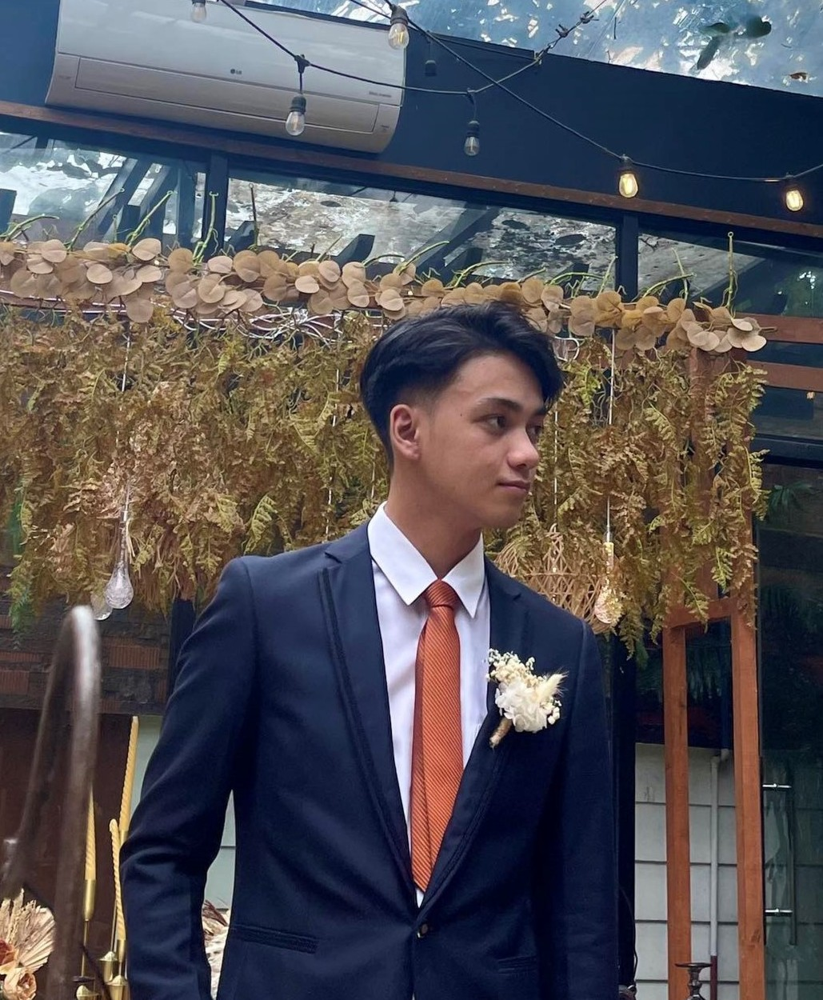
A BS in Computer Science Student graduate with a strong expertise in Programming and Application Development, using PHP, JS, SQL, as well C#, and experience in using Microsoft's Power Platform and ASP.NET Framework.
CompTIA A+ Certified, with a deep understanding of PC hardware and software, networking, and cybersecurity, with solid troubleshooting and IT support skills, with a strict work ethic and great communication skills, as well as an easy-going personality, ready to take on any challenge.
A hard-worker, a fast learner, and a great team-player, with leadership skills, willing to learn new skills for self improvement and contribute effectively in any project.
Application Developer Intern at Conception Business Services, Inc. (March - May 2026)
The internship as an Application Developer in the Conception Business Services, Inc., taught me valuable skills and lessons as an Application Developer, primarily using Microsoft's Power Platform, ASP.NET Core Framework, and Microsoft's SQL Server. I was able to work on real-world projects, and gain hands-on experience in developing and testing applications, as well as working with a team of experienced developers.
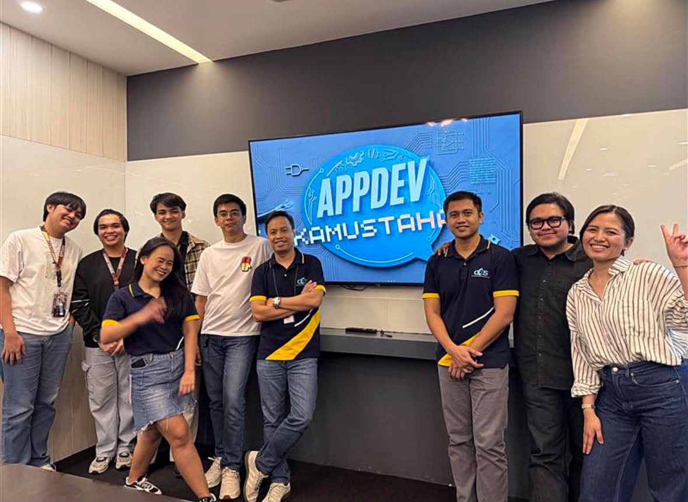
Utilizing YOLOv10 Computer Vision Model for Enhanced Recognition of Solid Waterborne Waste
The study focuses on developing an enhanced real-time waterborne solid waste recognition system by utilizing the YOLOv10 model for computer vision.
Existing AI waste recognition systems often struggle to detect waste in real-world environments due to challenges in real world environments such as awkward object orientations, dirt occlusions, crowding, and varying environmental conditions.
The project also won the 2026 Best Thesis Award in Pamantasan ng Lungsod ng Muntinlupa's College of Information Technology and Computer Studies!
It helped my skills on integrating AI on real-world applications, as well as improving my skills in fine tuning an AI model, optimizing a system, as well as improving my knowledge in computer vision, machine learning, and data management.
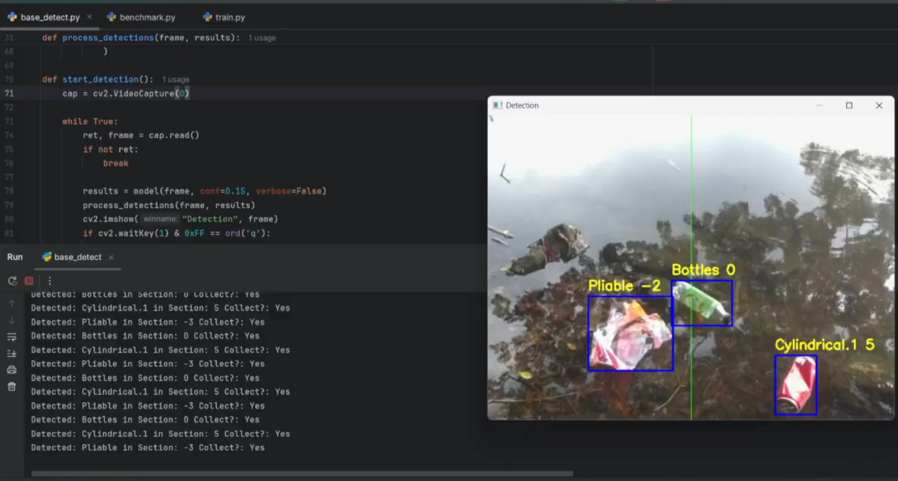
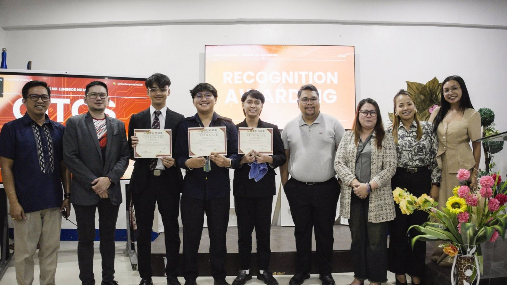
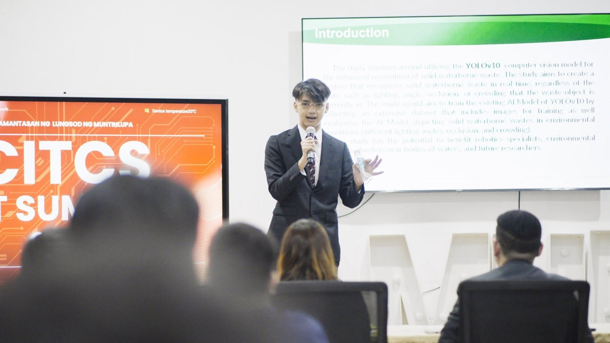
Arduino-based Pet Access Using Magnetic Switches
This project is a pet access system that uses an arduino microcontroller and magnetic switches to control the access of pets to certain areas. The system allows pet owners to set up a secure and convenient way for their pets to enter and exit designated areas, and only allow for certain pets to access certain areas.
This project helped me with my knowledge in using microcontrollers, sensors, and programming to create functional systems, with hardware integrations, as well as electronic circuit design and implementation.
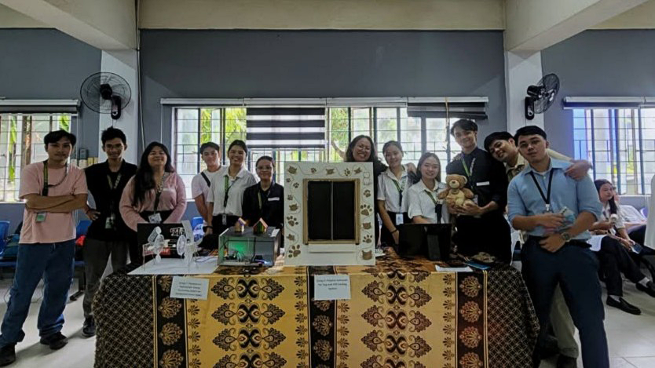
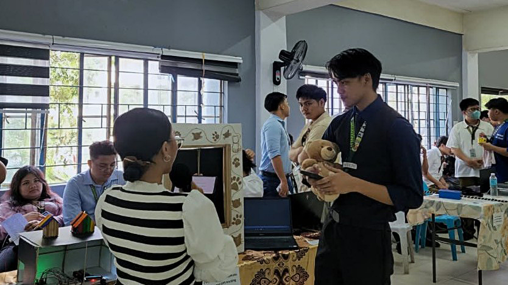
Centralized Electronic Health Record System for Muntinlupa National High School - Main JHS Clinic
This project is a centralized electronic health record system for the MNHS-Main Junior High School Clinic. The system allows for the efficient management of patient records, including medical history, diagnoses, treatments, and medications.
This project helped me with my knowledge in database management, web development, and user interface design, as well as improving my skills in data security and privacy.
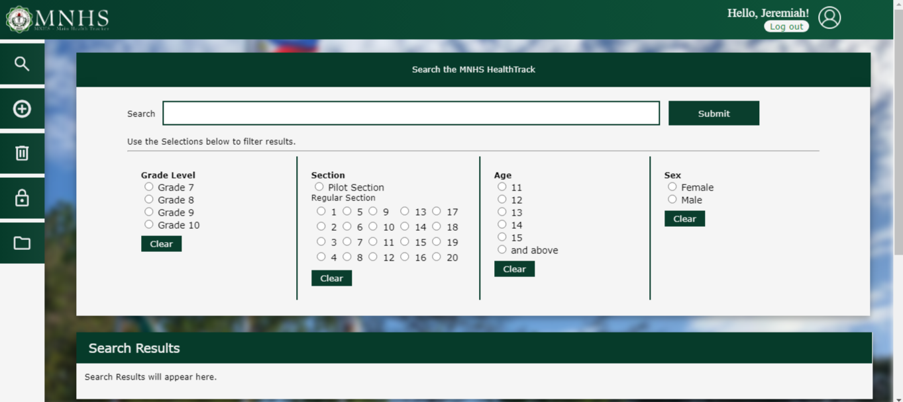
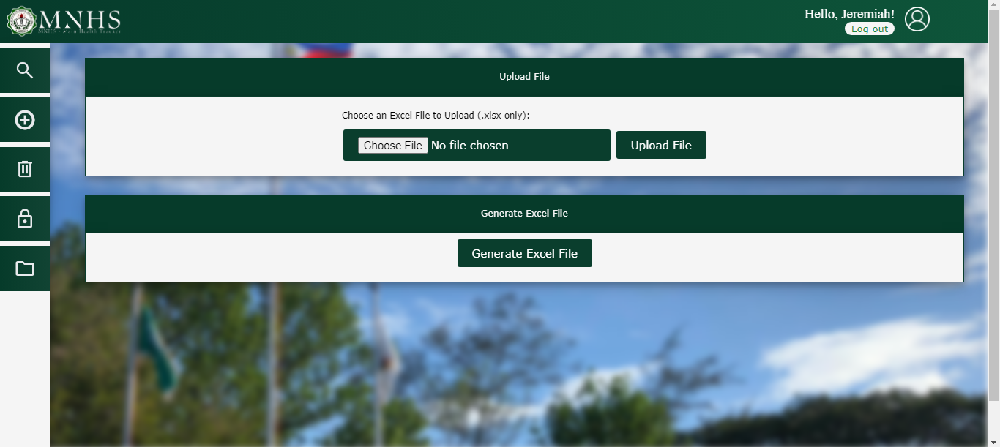
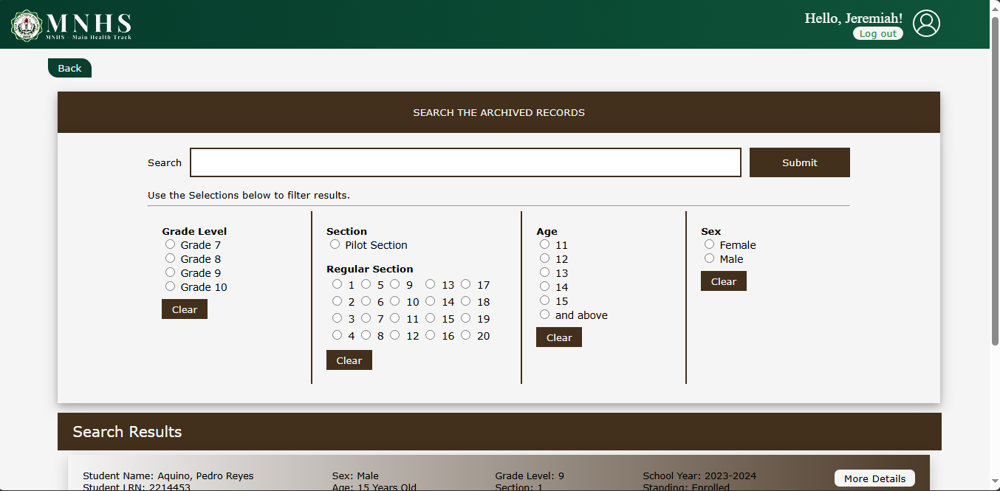
Development of a Web-based Ordering System for the Muntinlupa National High School – Main SHS
This project is a web-based ordering system for the MNHS-Main Senior High School. The system allows for the efficient management of orders, including order tracking, payment processing, and inventory management for the convenience of the students and the staff of MNHS.
This project helped me with my knowledge in web development, database management, and user interface design.
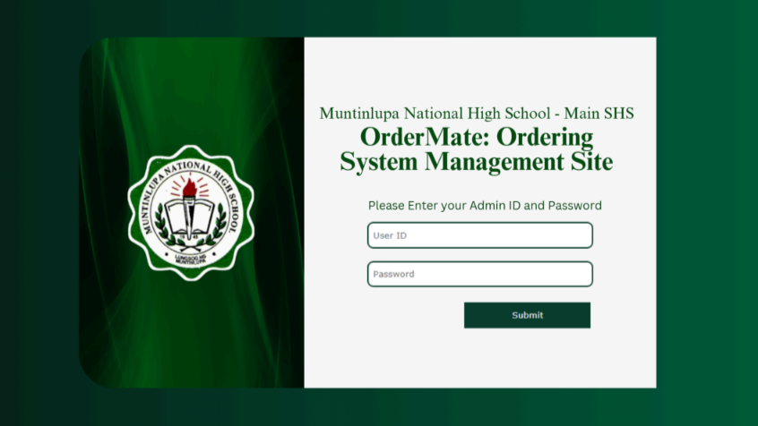
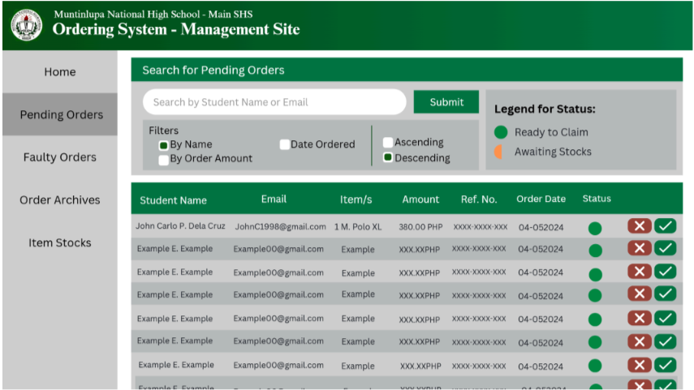
Please feel free to contact me at:
Mail: escletojeremiah@gmail.com
Mobile: +63 991 809 6737